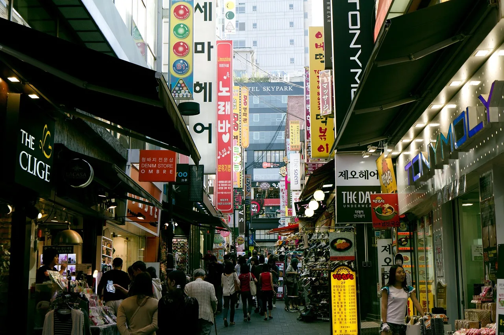
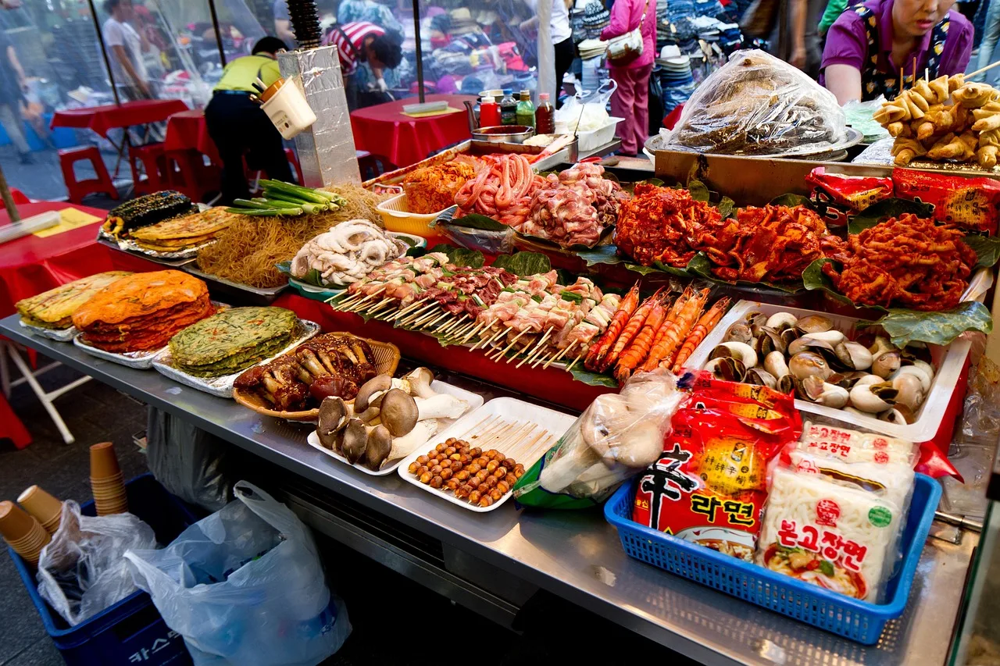
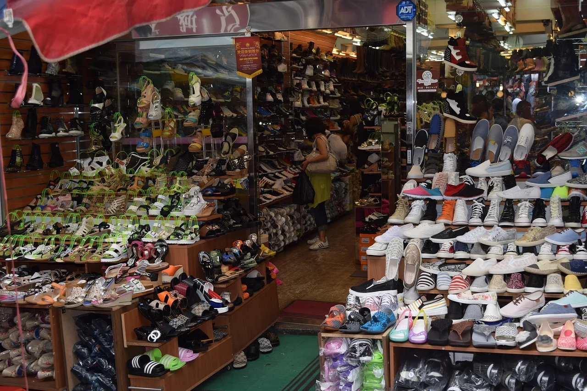
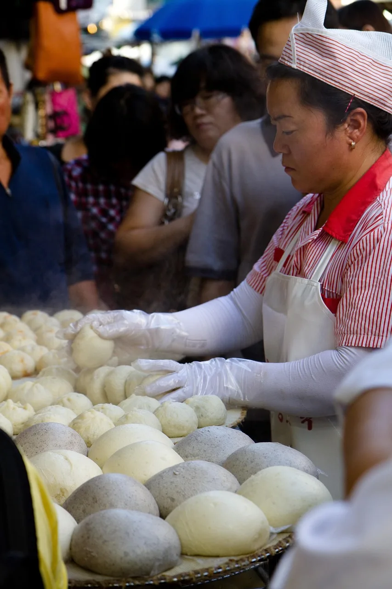

▲ 남대문시장의 골목. 사람 다니기도 빠듯한 폭이라 대형 주차시설이 들어설 공간 자체가 없다 ⓒ Pixabay
1. 서울 한복판, 관광특구, 그런데 주차장이 없다
남대문시장은 서울 중구 남창동과 남대문로 3~4가 일대에 자리한 전통시장이자 관광특구입니다. 지하철 4호선 회현역 5번 출구와 바로 연결돼 있고, 역의 부역명도 '남대문시장'으로 지정돼 있을 정도로 대중교통 접근성이 좋습니다.
문제는 자가용입니다. 앞선 국내 도심 관광지 주차 비교 기사에서 본 것처럼, 이 시장은 도심형 재래시장 특유의 주차 난도를 가장 극단적으로 보여주는 사례입니다.

▲ 골목 하나하나가 상점과 노점으로 빼곡히 채워져 있어, 차량 한 대가 지나갈 여유조차 없는 구간이 많다 ⓒ Pixabay
2. 시가 운영하는 주차장은 2면 — 그마저도 버스 전용
서울시설공단이 안내하는 '남대문시장 직영 공영주차장'은 중구 남창동 51-4 일대에 있습니다. 그런데 규모를 보면 놀랍습니다.
| 구분 | 내용 |
|---|---|
| 위치 | 서울 중구 남창동 51-4 일대 |
| 규모 | 2면 |
| 이용 대상 | 관광버스 전용 |
| 요금 | 무료개방 |
| 구분 | 1급지 노상주차장 |
서울 도심 한복판, 하루 방문객이 수십만 명에 이른다는 시장의 공식 주차장이 노상 2면뿐이고 그마저 승용차는 세울 수 없습니다. 사실상 개인 차량을 위한 시 운영 주차장은 없다고 보는 것이 정확합니다.
3. 왜 이렇게 됐나 — 골목이 만든 구조적 한계
이유는 시장의 물리적 구조에 있습니다. 남대문시장은 아직 아케이드(지붕이 덮인 상가 통로)가 없는 구간이 많고, 좁은 골목 사이사이에 독립 점포가 촘촘히 들어서 있습니다. 대형 주차시설을 새로 지으려 해도 부지 확보 자체가 어렵습니다.
여기에 두 가지 현실적인 장벽이 더해집니다. 시장 부지의 소유 관계가 복잡하게 얽혀 있고, 상인 간 결속력이 느슨해 대규모 시설 투자에 대한 합의를 이끌어내기가 쉽지 않습니다. 주차 시설 확충에는 막대한 비용이 들지만, 이를 지자체나 국가가 전액 지원하기도 어려운 구조입니다.

▲ 좁은 상점마다 물건이 가득 쌓여 있는 구조는 이 시장의 매력이자, 동시에 공간 확장을 어렵게 만드는 요인이다 ⓒ Pixabay
4. 그래서 답은 옆 백화점이다
남대문시장 방문객들 사이에서 실질적인 정답으로 통하는 곳은 신세계백화점 본점 주차장입니다. 시장과 바로 인접해 있고, 구매 금액에 따라 주차 시간을 무료로 인정해 주는 방식입니다.
| 구매 금액 | 무료 주차 시간 |
|---|---|
| 5만 원 이상 | 1시간 |
| 10만 원 이상 | 2시간 |
| 15만 원 이상 | 3시간 |
당일 구매 영수증만 인정되고, 다른 무료 주차권이나 영수증과는 합산할 수 없다는 점은 챙겨야 할 조건입니다. 백화점에서 필요한 물건을 미리 사두고 시장을 둘러보는 동선을 짜면, 주차 걱정 없이 체류 시간을 확보할 수 있습니다.
이 방법이 아니라면 남는 선택은 유료 민영 주차장입니다. 모두의주차장 같은 앱에서 하루 5,000원대 요금의 인근 주차장을 검색할 수 있지만, 시장에서 다소 떨어진 곳이 많아 도보 이동 거리를 감안해야 합니다.
5. 도매는 밤, 소매는 낮 — 시간대부터 정하고 가야 한다

▲ 남대문시장은 도매와 소매가 함께 운영되는 시장으로, 상가별로 문 여는 시간이 다르다 ⓒ Pixabay
이 시장은 도매와 소매가 같은 공간에서 다른 시간대에 움직입니다.
| 구분 | 시간 |
|---|---|
| 도매 | 23:00 ~ 05:00 (상가별 상이) |
| 소매 | 06:30~07:00 ~ 17:00~17:30 (상가별 상이) |
관광객이 흔히 떠올리는 나들이 시간대는 이 소매 영업시간과 겹칩니다. 다만 상가별로 문 여는 시간이 30분 정도씩 차이가 나고, 일요일 휴무인 상가도 많습니다. 특정 골목이나 품목을 목표로 방문한다면, 출발 전 해당 상가에 전화로 영업 여부를 확인하는 편이 헛걸음을 줄이는 방법입니다.
카드 결제가 안 되는 점포도 있습니다. 특히 꽃시장 같은 도매 성격이 강한 구역은 현금 결제가 기본이므로, 방문 전 현금을 넉넉히 준비해 두는 것이 좋습니다.
6. 정리 — 자차보다 대중교통이 유리한 흔치 않은 사례
남대문시장은 이 시리즈에서 다뤄온 다른 관광지들과 결이 다릅니다. 축제장처럼 임시 주차장을 늘리거나 셔틀을 투입하는 방식이 통하지 않습니다. 좁은 골목이라는 물리적 한계와 복잡한 소유 구조 때문에, 이 문제는 단기간에 해결되기 어렵습니다.
그래서 현실적인 결론은 이렇습니다. 가능하다면 지하철 4호선 회현역을 이용하는 것이 가장 속 편한 방법입니다. 자차가 꼭 필요하다면 신세계백화점 본점에서 필요한 쇼핑을 먼저 마치고 영수증으로 주차 시간을 확보한 뒤, 남은 일정을 그 시간 안에 맞추는 전략이 가장 현실적입니다.